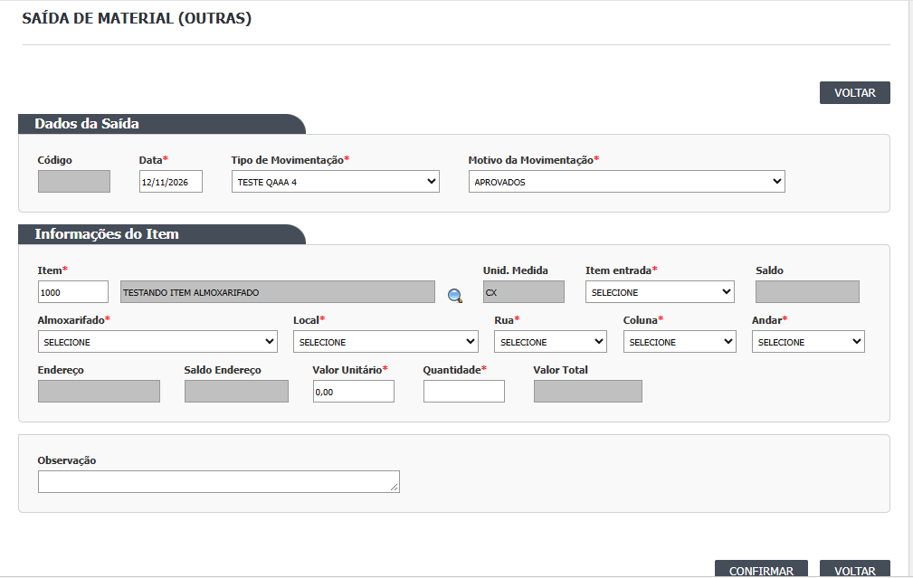

Para que serve e quando usar
A Saída de Material (Outras) baixa do estoque uma quantidade de um lote que está num endereço, por um motivo que não é a solicitação da produção nem a remessa: descarte, ajuste, perda, uso especial. A baixa é imediata: ao confirmar, o saldo do lote e do endereço diminui e o histórico do lote registra a saída. Não use esta tela para atender uma solicitação da produção (isso é o Atendimento de Solicitação) nem para enviar material a terceiros (isso é a Remessa de Material).

Quem usa e em que etapa do processo
Quem usa
- (a confirmar com a área)
- Quem pode abrir, incluir, alterar, excluir, imprimir e ver o histórico está em "Quem pode usar (permissões)", mais abaixo.
Em que etapa do processo entra (tela 17 do menu Estoque, módulo Estoque)
- A lista tem Incluir. Não existe saída "em rascunho": toda saída gravada é confirmada na hora (:281-284).
- O item escolhido precisa ter lote com saldo no grupo do usuário.
O que acontece depois (para onde o trabalho segue)
- CONFIRMAR pergunta "Confirma a Movimentação do Lote?" e, com SIM, grava a saída (TBL_SAIDA), a movimentação de saída (TBL_MOVIMENTACAO e item) e o saldo do lote e do endereço baixa.
- A saída aparece depois no Histórico do Lote (CT-EST-081, 22/10/2026).
Fonte: Resumo da tela e fluxo da tela (leitura do código e dos testes). O que for leitura da área precisa ser validado com a área.
Antes de começar (o que precisa existir: cadastros e relacionamentos)
Para registrar uma saída, estes cadastros já precisam estar prontos e ligados entre si:
| Precisa existir | Para quê | Onde se cadastra |
|---|---|---|
| Tipo de movimentação de saída (sem a marca de "movimentação especial") | Classifica a saída; o tipo especial não aparece nesta tela | Cadastros › Tipo de Movimentação |
| Motivo da movimentação, ligado a saída | Diz por que o material sai; a lista de motivos acompanha o tipo escolhido (se o tipo é de saída, mostra motivos de saída) | Cadastros › Motivo da Movimentação |
| Item ativo, com unidade de medida e custo médio | O custo médio vira o Valor Unitário da saída | Cadastros › Item |
| Lote do item com saldo em algum endereço | Só aparecem lotes com saldo maior que zero, não bloqueados e fora de reanálise | Entra pelo Recebimento, Entrada de Material ou Devolução |
| Almoxarifado, Local, Rua, Coluna e Andar onde o lote está | Formam o endereço (formato L000-R000-C000-A000) |
Cadastros › Almoxarifado, Local de Armazenagem, Rua, Coluna e Andar |
| Almoxarifado liberado para o seu grupo de usuário | Só aparecem os almoxarifados, locais e lotes do grupo do usuário | Cadastros › Grupo Usuário - Almoxarifado |
Informações necessárias para registrar uma saída
| Campo | O que informar | De onde vem | Obrigatório |
|---|---|---|---|
| Código | Gerado pelo sistema (até 10 caracteres) | Automático | Não preencher |
| Data | Data da saída; não pode ser futura | Hoje, editável | Sim |
| Tipo de Movimentação | Tipo de saída | Lista dos tipos sem marca especial | Sim |
| Motivo da Movimentação | Motivo da baixa | Lista que acompanha o tipo | Sim |
| Item | Código do item (a lupa abre "Localizar Item") | Cadastro de itens do seu grupo | Sim |
| Unid. Medida | Unidade do item | Vem do item (travado) | Automático |
| Item entrada | O lote a baixar | Só lotes do item com saldo, no seu grupo | Sim |
| Saldo | Saldo total do lote | Calculado (travado) | Automático |
| Almoxarifado, Local, Rua, Coluna, Andar | O endereço de onde o material sai | Só endereços onde o lote tem saldo | Sim, os cinco |
| Endereço | Código do endereço montado | Automático (L...-R...-C...-A...) |
Automático |
| Saldo Endereço | Saldo do lote naquele endereço | Calculado (travado) | Automático |
| Valor Unitário | Custo por unidade | Preenchido com o custo médio do item | Sim |
| Quantidade | Quanto sai | Ao escolher o Andar, vem preenchida com todo o saldo do endereço; ajuste se for menos | Sim |
| Valor Total | Quantidade × valor unitário | Calculado (travado) | Automático |
| Observação | Justificativa da saída (até 255 caracteres; o sistema grava em maiúsculas) | Digitada | Não é obrigatória (veja os cuidados) |
Passo a passo
- No menu Estoque, abra Saída de Material e clique em Incluir.
- Confira a Data. Escolha o Tipo e depois o Motivo (o motivo só lista o que combina com o tipo).
- Digite o código do Item e clique na lupa. Se não achar, o sistema abre "Localizar Item". O sistema preenche a unidade e o valor unitário.
- Escolha o Item entrada (o lote). O sistema mostra o Saldo do lote.
- Escolha Almoxarifado, Local, Rua, Coluna e Andar, nesta ordem: cada lista só mostra o que existe onde o lote tem saldo. Ao escolher o Andar, aparecem o Endereço, o Saldo Endereço e a Quantidade (já com todo o saldo do endereço).
- Ajuste a Quantidade se for retirar só parte. O Valor Total é calculado.
- Escreva a Observação com o motivo real da baixa (recomendado, mesmo não sendo obrigatória).
- Clique em CONFIRMAR. O sistema pergunta "Confirma a Movimentação do Lote?". Com SIM, responde "Inclusão realizada com sucesso!" e volta para a lista.
O que acontece quando você confirma
- Grava a saída (código, tipo, motivo, lote, endereço, quantidade, valor, observação, usuário e data).
- Cria a movimentação de estoque de saída e baixa o saldo do lote e do endereço, na mesma operação.
- Marca a saída como confirmada. Não existe saída em rascunho, e uma saída confirmada não pode ser desfeita por esta tela (o ícone de excluir some).
- A saída aparece no Histórico do Lote. O LOG da saída registra a inclusão e a confirmação.
- Esta tela não lê nem grava em outros módulos: tudo fica no Estoque.
O que o sistema recusa
- Campo obrigatório vazio (cada campo mostra a sua mensagem, por exemplo "Motivo da movimentação não informado.!").
- Quantidade zero ("Quantidade inválida!").
- Quantidade maior que o saldo do lote ou do endereço.
- Lote em endereço de quarentena com análise pendente ("O Lote informado possui pendencia de analise!").
- Endereço montado que não existe ("Endereço inválido!").
Quem pode usar (permissões)
- A tela é a função 340 (Saída de Material). O cadastro do menu libera para o perfil só Incluir e Imprimir/Exportar. Visualizar, Excluir e Ver log dependem de funções que o menu não registra: por isso ficam escondidos para quem só tem o que o menu dá.
- O grupo de usuário limita o que a pessoa enxerga: só os almoxarifados, locais e lotes do grupo dela aparecem na lista e no formulário.
- Cuidado: a conferência "esta pessoa tem a função da tela?" para abrir a página está desligada no código (DV-EST-008, Alta): quem digitar o endereço da tela pode abri-la mesmo sem a função. A permissão hoje é, na prática, só esconder botões.
Cuidados e falhas conhecidas
- A Observação não é obrigatória, e o campo "justificativa" do histórico é fixo ("INCLUSÃO DE REGISTRO" / "CONFIRMAÇÃO DA MOVIMENTAÇÃO"): uma saída pode ficar sem nenhum motivo escrito (DV-EST-060). Escreva sempre a observação.
- Se o custo médio do item for zero, a saída grava custo 0,00 (DV-EST-060).
- Lote vencido não é impedido de sair (a tela não confere a validade); para descarte isso é o esperado, mas registre o motivo.
- A saída e a movimentação são gravadas em passos separados, sem transação única: se falhar entre os dois, pode sobrar uma saída não confirmada.
- Visualizar abre o formulário vazio (não mostra a saída escolhida) e Excluir não aparece para saída confirmada.
- O Valor Unitário vem do navegador sem conferência no servidor: alterá-lo grava outro custo.
- Existe outra página com o mesmo título (
saidamaterial_lst.aspx), fora do menu: use sempre a do menu Estoque › Saída de Material.
Consultar saídas
A lista pesquisa por Código, Almoxarifado (só os do seu grupo) e Período, e mostra Código, Data, Tipo de Saída, Item, Item Entrada e os ícones:
| Ícone | O que faz | Quando aparece |
|---|---|---|
| Lupa (Visualizar) | Abre o formulário da saída | Só para quem tem a função "alterar" na tela; abre vazio (falha conhecida) |
| LOG (Ver log) | Abre "Log Alteração - Saída de Material (Outras)" | Só para quem tem a função de consultar o log (que o menu não registra) |
| Lixeira (Excluir) | Pede justificativa e manda a saída para a lixeira | Nunca aparece para saída confirmada, ou seja, para toda saída gravada |
Os botões Imprimir e Excel aparecem com resultado na lista e dependem da função de imprimir.
Campos da tela
"Sim (servidor)" quando o servidor também recusa; "Só na tela" quando só o navegador confere.
| Campo na tela | Tipo | Obrigatório | Regra, limite ou valores possíveis | Fonte |
|---|---|---|---|---|
| Código | Texto travado | Gerado | Código da saída (até 10 caracteres), gerado na inclusão | saida_item_ed.aspx:66; bllSaida.cs:23-47; TBL_SAIDA.sql |
| Data | Data | Sim (só na tela) | "Data da saída não inforada!" (erro de digitação no original) | saida_item_ed.aspx:72-80 |
| Tipo | Lista | Sim (só na tela) | "Tipo da movimentação não informado.!"; sem os tipos de movimentação especial | saida_item_ed.aspx:94-97; .aspx.cs:72-75 |
| Motivo | Lista | Sim (só na tela) | "Motivo da movimentação não informado.!" | saida_item_ed.aspx:108-111 |
| Item (código) | Texto | Sim (só na tela) | "Item não foi informado!"; "Código do Item não localizado!" | saida_item_ed.aspx:139-143 |
| Unid. | Texto travado | Não se aplica | Vem do item | saida_item_ed.aspx:169 |
| Item de entrada (lote) | Lista | Sim (só na tela) | "Item de Entrada não informado!"; só lotes com saldo no grupo | saida_item_ed.aspx:175-178; .aspx.cs:60-67 |
| Saldo | Texto travado | Não se aplica | Saldo total do lote | saida_item_ed.aspx:189 |
| Almoxarifado | Lista | Sim (só na tela) | "Almoxarifado não informado.!" | saida_item_ed.aspx:198-201 |
| Local, Rua, Coluna, Andar | Listas | Sim (só na tela) | "Local não Informado!", "Rua não informada!", "Coluna não informada!", "Andar não informado!"; "Endereço inválido!" | saida_item_ed.aspx:212-268 |
| Saldo Endereço | Texto travado | Não se aplica | Saldo do lote no endereço | saida_item_ed.aspx:275 |
| Valor Unitário | Número | Sim (só na tela) | "O Campo valor é obrigatório!"; vem do custo médio do item | saida_item_ed.aspx:281-283; .aspx.cs:502 |
| Quantidade | Número | Sim (só na tela e servidor) | "O Campo quantidade é obrigatório!"; "Quantidade inválida!" se zero; não pode passar do saldo do lote nem do endereço | saida_item_ed.aspx:293-295; .aspx.cs:230-243 |
| Valor Total | Número travado | Não se aplica | Quantidade × valor unitário | saida_item_ed.aspx:305 |
| Observação | Texto de até 255 caracteres | Não | Gravada em maiúsculas; não é obrigatória | saida_item_ed.aspx:320; .aspx.cs:250 |
| Lista: Código, Almoxarifado, Período | Texto, lista, duas datas | Não | Código procura dentro do texto; período usa as duas datas | saida_item_lst.aspx; dalSaida.cs:271-285 |
Botões e ações
| Botão ou ação | Quando aparece | O que faz | Para onde leva a saída | Fonte |
|---|---|---|---|---|
| Pesquisar e Limpar | Lista | Filtra e esvazia | Não muda | saida_item_lst.aspx.cs:34-57 |
| Incluir | Lista | Abre o formulário vazio | Nova | saida_item_lst.aspx.cs:59 |
| Visualizar (ícone) | Linha | Abre o formulário (vazio) | Não muda | saida_item_lst.aspx.cs:120-122, 150-165 |
| Excluir (ícone) | Linha de saída não confirmada | Pede justificativa; marca a saída como na lixeira | Excluída | saida_item_lst.aspx.cs:122-131 e 257-300; dalSaida.cs:111-133 |
| Ver log (ícone) | Linha | Abre o histórico "Log Alteração - Saída de Material (Outras)" | Não muda | saida_item_lst.aspx.cs:138-146 |
| Imprimir / Excel | Lista com resultado | Imprime ou exporta | Não muda | saida_item_lst.aspx.cs:83-84 |
| CONFIRMAR | Formulário | Pergunta e grava a saída e a movimentação | Confirmada (movimentada) | saida_item_ed.aspx.cs:194-286 |
| VOLTAR | Sempre | Volta à lista | Não muda | saida_item_ed.aspx:46 e 348 |
Mensagens do sistema
| Mensagem (texto exato do código) | Quando aparece | Fonte |
|---|---|---|
| Confirma a Movimentação do Lote? | Ao clicar CONFIRMAR (vista em teste, CT-EST-081, 22/10/2026) | saida_item_ed.aspx.cs:181 |
| Inclusão realizada com sucesso! | Depois de gravar (vista em teste, CT-EST-081) | saida_item_ed.aspx.cs:286 |
| Data da saída não inforada! / Tipo da movimentação não informado.! / Motivo da movimentação não informado.! | Campos vazios (vistas em teste, CT-EST-081) | saida_item_ed.aspx:79, 96 e 110 |
| Código do Item não localizado! / Item não foi informado! / Item de Entrada não informado! | Item ou lote vazios (vistas em teste, CT-EST-081) | saida_item_ed.aspx:140, 142 e 177 |
| Almoxarifado não informado.! / Local não Informado! / Rua não informada! / Coluna não informada! / Andar não informado! / Endereço inválido! | Endereço incompleto (vistas em teste, CT-EST-081) | saida_item_ed.aspx:200-267 |
| O Campo valor é obrigatório! / O Campo quantidade é obrigatório! | Valor ou quantidade vazios | saida_item_ed.aspx:282 e 294 |
| Quantidade inválida! | Quantidade zero | saida_item_ed.aspx.cs:231 |
| O Lote informado possui pendencia de analise! | Endereço de quarentena e lote com análise pendente | saida_item_ed.aspx.cs:235 |
| Quantidade informada superior ao saldo do lote! / Quantidade informada superior ao saldo do endereço! | Quantidade maior que o saldo | saida_item_ed.aspx.cs:240 e 243 |
| Erro ao consultar registro! | Falha ao carregar os combos | saida_item_ed.aspx.cs:54 |
| Exclusão realizada com sucesso! / A Saída já foi confirmada! | Excluir (a segunda nunca dispara, ver divergências) | saida_item_lst.aspx.cs:279 e 288 |
| Erro na inclusão do registro. / Erro na Exclusão do Registro. / O Código já está cadastrado. | Falha do servidor | bllSaida.cs:50-90, 169 |
Quem pode fazer o quê
Ainda não levantado para esta tela
O quadro "Quem pode fazer o quê" é preenchido a partir de testes de tela por perfil (nível, área e etapa do registro), nunca por suposição. Esta tela ainda não passou por esse levantamento.